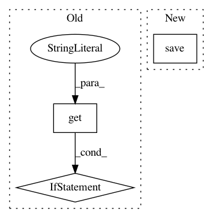

79fc09d66d3f4736b9fb4f5756a78725719f3808,train.py,,train,#Any#,27
Before Change
optimizer = optim.Adam(model.parameters(), lr=opt.learning_rate)
// Load the optimizer
if infos.get("state_dict", None):
optimizer.load_state_dict(infos["state_dict"])
while True:
if update_lr_flag:
// Assign the learning rate
if epoch > opt.learning_rate_decay_start and opt.learning_rate_decay_start >= 0:
After Change
torch.save(model.state_dict(), checkpoint_path)
print("model saved to {}".format(checkpoint_path))
optimizer_path = os.path.join(opt.checkpoint_path, "optimizer.pth")
torch.save(optimizer.state_dict(), optimizer_path)
// Dump miscalleous informations
infos["iter"] = iteration
infos["epoch"] = epoch
In pattern: SUPERPATTERN
Frequency: 3
Non-data size: 3
Instances
Project Name: ruotianluo/ImageCaptioning.pytorch
Commit Name: 79fc09d66d3f4736b9fb4f5756a78725719f3808
Time: 2017-02-10
Author: rluo@ttic.edu
File Name: train.py
Class Name:
Method Name: train
Project Name: AlexsLemonade/refinebio
Commit Name: 851a4d3df459e36fb500828815cd6840860d3467
Time: 2018-06-07
Author: kurt.wheeler91@gmail.com
File Name: foreman/data_refinery_foreman/surveyor/geo.py
Class Name: GeoSurveyor
Method Name: create_experiment_and_samples_from_api